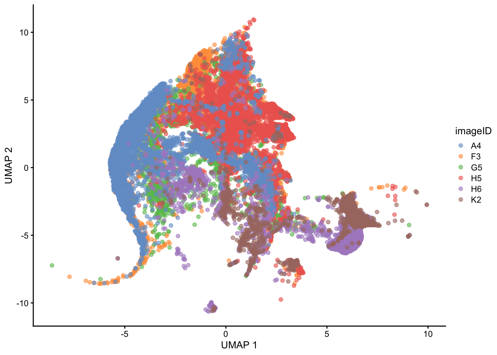
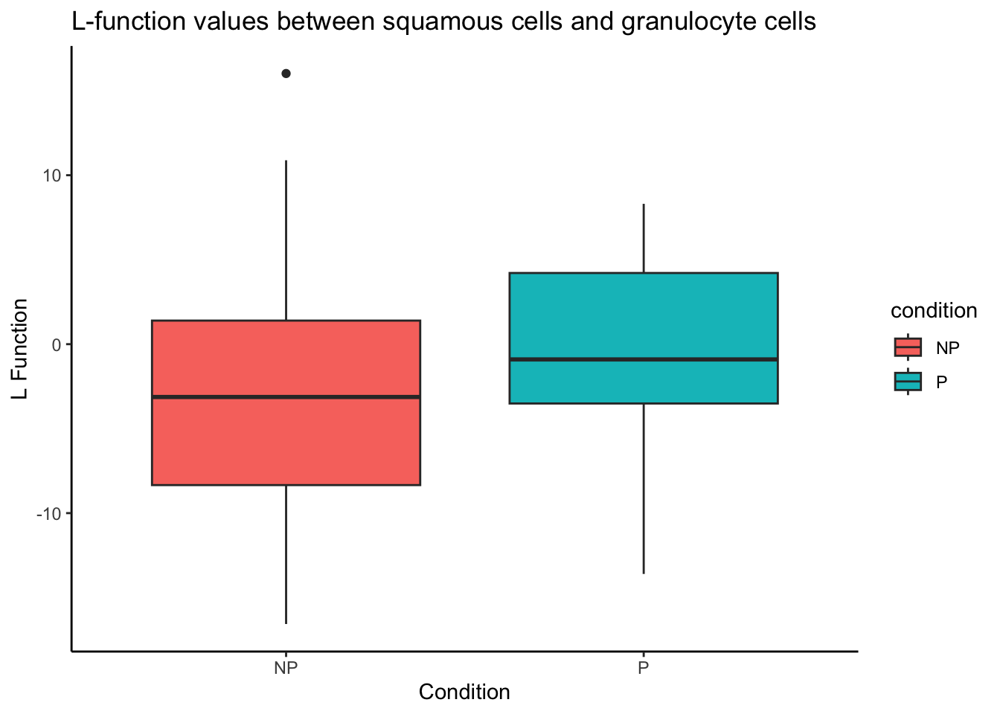

13 Case Study: Head and Neck Squamous Cell Carcinoma (Ferguson et al., 2022)
In this section, we will demonstrate how the workflow can be applied to a single dataset, the Ferguson 2022 dataset. The key conclusion of this manuscript (amongst others) is that spatial information about cells and the immune environment can be used to predict primary tumour progression or metastases in patients. We will use our workflow to reach a similar conclusion.
13.1 Load libraries
use_mc <- TRUE
set.seed(51773)
if (use_mc) {
nCores <- max(parallel::detectCores()/2, 1)
} else {
nCores <- 1
}
BPPARAM <- simpleSeg:::generateBPParam(nCores)
theme_set(theme_classic())13.2 Read in images
As before, we can load the Ferguson 2022 image data from the SpatialDatasets package into a CytoImageList and store them as h5 file-on-disk in a temporary directory. We will also assign the metadata columns of the CytoImageList object using the mcols function.
pathToImages <- SpatialDatasets::Ferguson_Images()see ?SpatialDatasets and browseVignettes('SpatialDatasets') for documentationloading from cachetmp <- tempfile()
unzip(pathToImages, exdir = tmp)
# Store images in a CytoImageList on_disk as h5 files to save memory.
images <- cytomapper::loadImages(
tmp,
single_channel = TRUE,
on_disk = TRUE,
h5FilesPath = HDF5Array::getHDF5DumpDir(),
BPPARAM = BPPARAM
)
# assign metadata columns
mcols(images) <- S4Vectors::DataFrame(imageID = names(images))Time for this code chunk to run with 5.5 cores: 139.49 seconds
13.2.1 Clean channel names
As we’re reading the image channels directly from the names of the TIFF image, we will first clean them for ease of downstream processing.
channelNames(images) <- channelNames(images) |>
# remove preceding letters
sub(pattern = ".*_", replacement = "", x = _) |>
# remove the .ome
sub(pattern = ".ome", replacement = "", x = _)13.2.2 Clean image names
Similarly, the image names will be taken from the folder name containing the individual TIFF images for each channel. These will often also need to be cleaned.
13.3 SimpleSeg: Segment the cells in the images
Next, we will use our simpleSeg package to generate simple segmentation masks of images.
Our simpleSeg R package on https://github.com/SydneyBioX/simpleSeg provides a series of functions to generate simple segmentation masks of images. A key strength of the simpleSeg package is that we have included multiple ways to perform some simple segmentation operations and incorporated multiple automatic procedures to optimise some key parameters when these aren’t specified. These functions leverage the functionality of the EBImage package on Bioconductor. For more flexibility when performing your segmentation in R, we recommend learning to use the EBImage package.
13.3.1 Run simpleSeg
If your images are stored in a list or CytoImageList they can be segmented with a simple call to simpleSeg. simpleSeg is an R implementation of a simple segmentation technique which traces out the nuclei using a specified channel (by setting nucleus =) then dilates around the traced nuclei by a specified amount (controlled using discSize). The nucleus can be traced out using either one specified channel, or by using the principal components of all channels most correlated to the specified nuclear channel by setting pca = TRUE.
In the example below, we used simpleSeg to trace the nuclei signal in the images based on the HH3 channel, expanding outward from the nucleus by 3 pixels. A more detailed explanation of each of the key parameters is available in the Processing section.
13.3.2 Visualise separation
We can then use the display and colorLabels functions from EBImage to examine the performance of the cell segmentation.
EBImage::display(colorLabels(masks[[1]]))
13.3.3 Visualise outlines
The plotPixels function in cytomapper makes it easy to overlay the mask on top of the nucleus intensity marker to see how well our segmentation process has performed. Here, we can see that the segmentation appears to be performing reasonably. If you see over or under-segmentation of your images, discSize is a key parameter in simpleSeg for optimising the size of the dilation disc after segmenting out the nuclei.
plotPixels(image = images["F3"],
mask = masks["F3"],
img_id = "imageID",
colour_by = c("HH3"),
display = "single",
colour = list(HH3 = c("black","blue")),
legend = NULL,
bcg = list(
HH3 = c(1, 1, 2)
))
If you wish to visualise multiple markers instead of just the HH3 marker and see how the segmentation mask performs, this can also be done. Here, we can see that our segmentation mask has done a good job of capturing the CD31 signal, but perhaps not such a good job of capturing the FXIIIA signal, which often lies outside of our dilated nuclear mask. This could suggest that we might need to increase the discSize of our dilation.
plotPixels(image = images["F3"],
mask = masks["F3"],
img_id = "imageID",
colour_by = c("HH3", "CD31", "FX111A"),
display = "single",
colour = list(HH3 = c("black","blue"),
CD31 = c("black", "red"),
FX111A = c("black", "green") ),
legend = NULL,
bcg = list(
HH3 = c(1, 1, 2),
CD31 = c(0, 1, 2),
FX111A = c(0, 1, 1.5)
))
13.4 Summarise cell features
We can then use the measureObjects function from the cytomapper package to characterise the phenotypes of each of the segmented cells. measureObjects will calculate the average intensity of each channel within each cell as well as a few morphological features. By default, measureObjects will return a SingleCellExperiment object, where the channel intensities are stored in the counts assay and the spatial location of each cell is stored in colData in the m.cx and m.cy columns. We can ask measureObjects to return a SpatialExperiment object instead by specifying return_as = "spe, and the spatial coordinates of each cell will be stored in the spatialCoords slot.
# Summarise the expression of each marker in each cell
cells <- cytomapper::measureObjects(masks,
images,
img_id = "imageID",
return_as = "spe",
BPPARAM = BPPARAM)
spatialCoordsNames(cells) <- c("x", "y")Time for this code chunk to run with 5.5 cores: 344.15 seconds
13.5 Load the clinical data
To associate features in our image with disease progression, it is important to read in information which links image identifiers to their progression status. The clinical data is available through the SpatialDatasets package.
13.5.1 Read the clinical data
clinical <- SpatialDatasets::fergusonClinical()see ?SpatialDatasets and browseVignettes('SpatialDatasets') for documentationloading from cacheIf needed, the SpatialExperiment object can be stored as an R Data file.
save(cells, file = "spe_Ferguson_2022.rda")In case you already have your SpatialExperiment/SingleCellExperiment object, you may only be interested in our downstream workflow. For the sake of convenience, we’ve provided capability to directly load in the SpatialExperiment object that we’ve generated.
load("data/cells.rda")13.6 Normalise the data
Next, we can check if the marker intensities of each cell require some form of transformation or normalisation. The reason we do this is two-fold:
- The intensities of images are often highly skewed, preventing any meaningful downstream analysis.
- The intensities across different images are often different, meaning that what is considered “positive” can be different across images.
By transforming and normalising the data, we aim to reduce these two effects. Below, we extract the marker intensities from the counts assay and take a closer look at the CD3 marker, which should be expressed in the majority of T cells.
# Plot densities of CD3 for each image.
cells |>
join_features(features = rownames(cells), shape = "wide", assay = "counts") |>
ggplot(aes(x = CD3, colour = imageID)) +
geom_density() +
theme(legend.position = "none")
Here, we can see that the intensities are very clearly skewed, and it is difficult to distinguish a CD3- cell from a CD3+ cell. Further, we can clearly see some image-level batch effect, where across images, the intensity peaks differ drastically.
Another method of visualising batch effects is using a dimensionality reduction technique and visualising how the images separate out on a 2D plot. If no batch effect is expected, we should see the images largely overlap with each other.
# Usually we specify a subset of the original markers which are informative to separating out distinct cell types for the UMAP and clustering.
ct_markers <- c("podoplanin", "CD13", "CD31",
"panCK", "CD3", "CD4", "CD8a",
"CD20", "CD68", "CD16", "CD14", "HLADR", "CD66a")
set.seed(51773)
# Perform dimension reduction using UMAP.
cells <- scater::runUMAP(
cells,
subset_row = ct_markers,
exprs_values = "counts"
)
# Select a subset of images to plot.
someImages <- unique(cells$imageID)[c(1, 5, 10, 20, 30, 40)]
# UMAP by imageID.
scater::plotReducedDim(
cells[, cells$imageID %in% someImages],
dimred = "UMAP",
colour_by = "imageID"
)
The UMAP also indicates that some level of batch effect exists in our dataset.
To mitigate this, we can use the normalizeCells function from simpleSeg. Below, we perform normalisation (specified by method =) by 1) trimming the 99th percentile, 2) dividing by the mean and 3) removing the 1st principal component. This modified data is then stored in the norm assay by default.
# Leave out the nuclei markers from our normalisation process.
useMarkers <- rownames(cells)[!rownames(cells) %in% c("DNA1", "DNA2", "HH3")]
# Transform and normalise the marker expression of each cell type.
cells <- normalizeCells(cells,
markers = useMarkers,
transformation = NULL,
method = c("trim99", "mean", "PC1"),
assayIn = "counts",
cores = nCores
)
# Plot densities of CD3 for each image
cells |>
join_features(features = rownames(cells), shape = "wide", assay = "norm") |>
ggplot(aes(x = CD3, colour = imageID)) +
geom_density() +
theme(legend.position = "none")We can see that this normalised data appears more bimodal, not perfectly, but likely to a sufficient degree for clustering, as we can at least observe a clear CD3+ peak at 1.00, and a CD3- peak at around 0.3. For more information on available normalisation and transformation methods and a detailed explanation of the parameters, refer to our Quality Control section.
We can also appreciate through the UMAP a reduction of the batch effect we initially saw.
set.seed(51773)
# Perform dimension reduction using UMAP.
cells <- scater::runUMAP(
cells,
subset_row = ct_markers,
exprs_values = "norm",
name = "normUMAP"
)
someImages <- unique(cells$imageID)[c(1, 5, 10, 20, 30, 40)]
# UMAP by imageID.
scater::plotReducedDim(
cells[, cells$imageID %in% someImages],
dimred = "normUMAP",
colour_by = "imageID"
)
13.7 FuseSOM: Cluster cells into cell types
We can also appreciate from the UMAP above that there is a division of clusters, most likely representing different cell types. We next aim to empirically distinguish each cluster using our FuseSOM package for clustering.
Our FuseSOM R package can be found on bioconductor at https://www.bioconductor.org/packages/release/bioc/html/FuseSOM.html, and provides a pipeline for the clustering of highly multiplexed in situ imaging cytometry assays. This pipeline uses the Self Organising Map architecture coupled with Multiview hierarchical clustering and provides functions for the estimation of the number of clusters.
Here we cluster using the runFuseSOM function. We specify the number of clusters to identify to be numClusters = 10. We also specify a set of cell-type specific markers to use, as we want our clusters to be distinct based off cell type markers, rather than markers which might pick up a transitioning cell state.
# Generate SOM and cluster cells into 10 groups
cells <- runFuseSOM(
cells,
markers = ct_markers,
assay = "norm",
numClusters = 10
)You have provided a dataset of class SpatialExperimentEverything looks good. Now running the FuseSOM algorithmNow Generating the Self Organizing Map GridOptimal Grid Size is: 8Now Running the Self Organizing Map ModelNow Clustering the PrototypesLoading required namespace: fastclusterNow Mapping Clusters to the Original DataThe Prototypes have been Clustered and Mapped SuccessfullyThe FuseSOM algorithm has completed successfullyWe can also observe how reasonable our choice of k = 10 was, using the estimateNumCluster and optiPlot functions. Here we examine the Gap method, but others, such as Silhouette and Within Cluster Distance are also available. We can see that there are elbow points in the gap statistic at k = 7, k = 10, and k = 11. We’ve specified k = 10, striking a good balance between the number of clusters and the gap statistic. For more discussion on how to select an appropriate value for k, refer to our Unsupervised Clustering section.
cells <- estimateNumCluster(cells, kSeq = 2:30)You have provided a dataset of class: SpatialExperimentNow Computing the Number of Clusters using Discriminant AnalysisNow Computing The Number Of Clusters Using Distance AnalysisoptiPlot(cells, method = "gap")You have provided a dataset of class: SpatialExperiment
13.7.1 Interpreting cluster phenotype
We can begin the process of understanding what each of these cell clusters are by using the plotGroupedHeatmap function from scater. At the least, here we can see we capture all the major immune populations that we expect to see, including the CD4 and CD8 T cells, the CD20+ B cells, the CD68+ myeloid populations, the CD66+ granulocytes, the podoplanin+ epithelial cells, and the panCK+ tumour cells.
# Visualise marker expression in each cluster.
scater::plotGroupedHeatmap(
cells,
features = ct_markers,
group = "clusters",
exprs_values = "norm",
center = TRUE,
scale = TRUE,
zlim = c(-3, 3),
cluster_rows = FALSE,
block = "clusters"
)
Given domain-specific knowledge of the tumour-immune landscape, we can go ahead and annotate these clusters as cell types given their expression profiles.
cells <- cells |>
mutate(cellType = case_when(
clusters == "cluster_1" ~ "GC", # Granulocytes
clusters == "cluster_2" ~ "MC", # Myeloid cells
clusters == "cluster_3" ~ "SC", # Squamous cells
clusters == "cluster_4" ~ "EP", # Epithelial cells
clusters == "cluster_5" ~ "SC", # Squamous cells (tumour cells)
clusters == "cluster_6" ~ "TC_CD4", # CD4 T cells
clusters == "cluster_7" ~ "BC", # B cells
clusters == "cluster_8" ~ "EC", # Endothelial cells
clusters == "cluster_9" ~ "TC_CD8", # CD8 T cells
clusters == "cluster_10" ~ "DC" # Dendritic cells
))New names:
New names:
• `UMAP1` -> `UMAP1...1`
• `UMAP2` -> `UMAP2...2`
• `UMAP1` -> `UMAP1...3`
• `UMAP2` -> `UMAP2...4`We might also be interested in how these cell types are distributed on the images themselves. Here we examine the distribution of clusters on image F3, noting the healthy epithelial and endothelial structures surrounded by tumour cells.
reducedDim(cells, "spatialCoords") <- spatialCoords(cells)
cells |>
filter(imageID == "F3") |>
plotReducedDim("spatialCoords", colour_by = "cellType")New names:
• `UMAP1` -> `UMAP1...1`
• `UMAP2` -> `UMAP2...2`
• `UMAP1` -> `UMAP1...3`
• `UMAP2` -> `UMAP2...4`
13.7.2 Check cell type frequencies
It is always helpful to check the number of cells in each cluster. Here, we observe that Cluster 10 contains a large number of cells, likely tumour cells, characterized by high panCK expression and inconsistent expression of other markers. In contrast, Cluster 4 has very few cells.
EP EC DC GC TC_CD4 BC SC TC_CD8 MC
708 3290 4769 5262 8896 11788 11842 13587 92903 We can also use the UMAP we computed earlier to visualise our data in a lower dimension and see how well our annotated cell types cluster out.
# UMAP by cell type
scater::plotReducedDim(
cells[, cells$imageID %in% someImages],
dimred = "normUMAP",
colour_by = "cellType"
)
13.7.3 Testing for association between the proportion of each cell type and progressor status
We recommend using a package such as diffcyt for testing for changes in abundance of cell types. However, the colTest function from the spicyR package allows us to quickly test for associations between the proportions of the cell types and progression status using either Wilcoxon rank sum tests or t-tests. Here we see a p-value less than 0.05 for our CD8 T cells, but this does not equate to a small FDR.
# Perform simple student's t-tests on the columns of the proportion matrix.
testProp <- colTest(cells,
condition = "group",
feature = "cellType",
type = "ttest")
head(testProp) mean in group NP mean in group P tval.t pval adjPval cluster
TC_CD4 0.0590 0.0330 2.70 0.0092 0.049 TC_CD4
GC 0.0250 0.0510 -2.80 0.0110 0.049 GC
TC_CD8 0.1000 0.0840 1.70 0.1000 0.300 TC_CD8
EP 0.0062 0.0046 1.00 0.3200 0.500 EP
SC 0.0700 0.0840 -1.00 0.3200 0.500 SC
DC 0.0340 0.0300 0.99 0.3300 0.500 DCLet’s examine one of these clusters using our getProp function from the spicyR package, which conveniently transforms our proportions into a feature matrix of images by cell type, enabling convenient downstream classification or analysis.
prop <- getProp(cells, feature = "cellType")
prop[1:5, 1:5] BC DC EC EP GC
A2 0.04290358 0.01690141 0.003250271 0.0010834236 0.02881907
A3 0.04834329 0.01991671 0.002715915 0.0005431831 0.01575231
A4 0.04116013 0.01163598 0.002952414 0.0053838138 0.01823550
A5 0.09108911 0.04780764 0.017821782 0.0008486563 0.01838755
A6 0.08572844 0.02824579 0.013875124 0.0019821606 0.01189296Next, let’s visualise how different the proportions are across progression statuses using a boxplot.
# Obtain most significant cell type
clusterToUse <- rownames(testProp)[1]
prop |>
select(all_of(clusterToUse)) |>
tibble::rownames_to_column("imageID") |>
left_join(clinical, by = "imageID") |>
ggplot(aes(x = group, y = .data[[clusterToUse]], fill = group)) +
geom_boxplot()It appears that the CD8 T cells are the most differentially abundant cell type across our progressors and non-progressors. The boxplot visualisation of CD8 T cell proportion clearly shows that progressors have a lower proportion of CD8 T cells in the tumour core.
NB: If you have already clustered and annotated your cells, you may only be interested in our downstream analysis capabilities, looking into identifying localisation (spicyR), cell regions (lisaClust), and cell-cell interactions (SpatioMark & Kontextual). Therefore, for the sake of convenience, we’ve provided capability to directly load in the SpatialExperiment (SPE) object that we’ve generated up to this point, complete with clusters, cell type annotations, and normalised intensities.
load("data/computed_cells.rda")13.8 spicyR: Test spatial relationships
Our spicyR package offers a range of functions to support the analysis of immunofluorescence, imaging mass cytometry data, and other assays that provide deep phenotyping of individual cells and their spatial distribution. In this example, we use the spicy function to assess changes in spatial relationships between pairwise combinations of cells.
In simple terms, spicyR utilises the L-function to evaluate whether cell types are localized or dispersed. The L-function quantifies “closeness” between points, where higher values indicate increased localisation and lower values suggest dispersion.
Here, we quantify spatial relationships using a combination of 10 radii from 10 to 100 by specifying Rs = 1:10*10 and mildly account for some global tissue structure using sigma = 50. For a more detailed explanation of the key parameters, refer to the Cell Localisation section. Additional information on optimising the parameters can be found in the spicyR paper.
spicyTest <- spicy(cells,
condition = "group",
cellTypeCol = "cellType",
imageIDCol = "imageID",
Rs = 1:10*10,
sigma = 50,
BPPARAM = BPPARAM)Coercing condition into factor. Using group = NP as base comparison group. If
this is not the desired base group, please convert cells$group into a factor
and change the order of levels(cells$group) so that the base group is at index
1.topPairs(spicyTest, n = 10) intercept coefficient p.value adj.pvalue from to
GC__MC 2.5225478 -4.772656 0.02970197 0.5084069 GC MC
EP__BC -1.6808757 11.358866 0.03072870 0.5084069 EP BC
BC__EP -1.7355224 10.878726 0.04145476 0.5084069 BC EP
GC__EP 0.4338434 -15.446652 0.04286558 0.5084069 GC EP
SC__SC 36.2057721 -12.991741 0.05423307 0.5084069 SC SC
EP__GC 0.2370792 -14.226026 0.06087964 0.5084069 EP GC
SC__DC -0.7454582 6.168406 0.06162965 0.5084069 SC DC
MC__GC 2.2961515 -4.183908 0.06210399 0.5084069 MC GC
DC__SC -0.3706126 6.001380 0.06561924 0.5084069 DC SC
GC__GC 43.6023084 -15.697248 0.08022246 0.5084069 GC GCThe most significant interaction appears to occur between B cells (BC) and endothelial cells (EC) with a p-value of 0.03. We can visualise these relatiionships using the signifPlot function, where we observe that cell type pairs appear to become less attractive (or avoid more) in the progression sample.
# Visualise which relationships are changing the most.
signifPlot(
spicyTest,
breaks = c(-1.5, 1.5, 0.5)
)
spicyR also includes functionality for visualising individual pairwise relationships. As an example, we can investigate whether the SC tumour cell type localizes with the GC granular cell type and assess whether this localisation influences tumour progression versus non-progression.
spicyBoxPlot(spicyTest,
from = "SC",
to = "GC")
Alternatively, we can look at the most differentially localised relationship between progressors and non-progressors by specifying rank = 1.
spicyBoxPlot(spicyTest,
rank = 1)
13.9 lisaClust: Find cellular neighbourhoods
Our lisaClust package on Bioconductor provides a series of functions to identify and visualise regions of tissue where spatial associations between cell types is similar. This package can be used to provide a high-level summary of cell-type co-localisation in multiplexed imaging data that has been segmented at a single-cell resolution. Here we use the lisaClust function to clusters cells into 5 regions with distinct spatial ordering. By default, these identified regions are stored in the regions column in the colData of our SpatialExperiment object.
# Cluster cells into spatial regions with similar composition.
cells <- lisaClust(
cells,
k = 4,
sigma = 50,
cellType = "cellType",
BPPARAM = BPPARAM
)Generating local L-curves.13.9.1 Region-cell type enrichment heatmap
We can try to interpret which spatial orderings the regions are quantifying using the regionMap function. This plots the frequency of each cell type in a region relative to what you would expect by chance.
# Visualise the enrichment of each cell type in each region
regionMap(cells, cellType = "cellType", limit = c(0.2, 2))
We can see here that our regions have neatly separated according to biological milieu, with region 2 containing our immune cell types, region 1 containing our tumour cells, and regions 3 and 4 representing our healthy epithelial and endothelial cells.
13.9.2 Visualise regions
We can quickly examine the spatial arrangement of these regions using plotReducedDim on image F3, where we can see the same division of immune, healthy, and tumour tissue that we identified in our regionMap.
cells |>
filter(imageID == "F3") |>
plotReducedDim("spatialCoords", colour_by = "region")
Although slower, we have also implemented a function called hatchingPlot that overlays region information using a hatching pattern, allowing it to be viewed alongside cell type classifications. The granularity of the region boundaries can be controlled using the nbp argument.
# Use hatching to visualise regions and cell types.
hatchingPlot(
cells,
useImages = "F3",
cellType = "cellType",
nbp = 300
)Concave windows are temperamental. Try choosing values of window.length > and < 1 if you have problems.
13.9.3 Test for association with progression
Similar to cell type proportions, we can quickly use the colTest function to test for associations between the proportions of cells in each region and progression status by specifying feature = "region".
# Test if the proportion of each region is associated
# with progression status.
testRegion <- colTest(
cells,
feature = "region",
condition = "group",
type = "ttest"
)
testRegion mean in group NP mean in group P tval.t pval adjPval cluster
region_3 0.260 0.280 -1.90 0.062 0.25 region_3
region_1 0.120 0.092 1.10 0.280 0.43 region_1
region_2 0.067 0.052 1.00 0.320 0.43 region_2
region_4 0.560 0.570 -0.61 0.550 0.55 region_4From the results above, it appears that none of the regions above are significantly associated with changes in progression status.
13.10 Statial: Identify changes in cell state.
Our Statial package (https://www.bioconductor.org/packages/release/bioc/html/Statial.html) provides a suite of functions (Kontextual) for robust quantification of cell type localisation which are invariant to changes in tissue structure. In addition, we provide a suite of functions (SpatioMark) for uncovering continuous changes in marker expression associated with varying levels of localisation.
13.10.1 SpatioMark: Continuous changes in marker expression associated with varying levels of localisation.
The first step in analysing these changes is to calculate the spatial proximity (getDistances) of each cell to every cell type. These values will then be stored in the reducedDims slot of the SingleCellExperiment object under the names distances. SpatioMark also provides functionality to look into proximal cell abundance using the getAbundance() function, which is further explored within the Statial package vignette.
cells$m.cx <- spatialCoords(cells)[,"x"]
cells$m.cy <- spatialCoords(cells)[,"y"]
cells <- getDistances(cells,
maxDist = 200,
nCores = nCores,
cellType = "cellType",
spatialCoords = c("m.cx", "m.cy")
)We can then visualise an example image, specified with image = "F3" and a particular marker interaction with cell type localisation. To visualise these changes, we specify two cell types with the from and to parameters, and a marker with the marker parameter (cell-cell-marker interactions). Here, we specify the changes in the marker podoplanin in SC tumour cells as its localisation to EP epithelial cells increases or decreases, where we can observe that podoplanin decreases in tumour cells as its distance to the central cluster of epithelial cells increases.
p <- plotStateChanges(
cells = cells,
cellType = "cellType",
spatialCoords = c("m.cx", "m.cy"),
type = "distances",
image = "F3",
from = "SC",
to = "EP",
marker = "podoplanin",
size = 1,
shape = 19,
interactive = FALSE,
plotModelFit = FALSE,
method = "lm"
)
p$image
$scatter`geom_smooth()` using formula = 'y ~ x'SpatioMark aims to holistically uncover all such significant relationships by looking at all interactions across all images. The calcStateChanges function provided by Statial can be expanded for this exact purpose - by not specifying cell types, a marker, or an image, calcStateChanges will examine the most significant correlations between distance and marker expression across the entire dataset.
state_dist <- calcStateChanges(
cells = cells,
cellType = "cellType",
type = "distances",
assay = 2,
nCores = nCores,
minCells = 100
)
head(state_dist[state_dist$imageID == "F3",], n = 10) imageID primaryCellType otherCellType marker coef tval
35862 F3 MC GC podoplanin -0.0017138476 -22.69802
35813 F3 MC TC_CD8 granzB 0.0018015902 17.29237
35970 F3 MC DC podoplanin -0.0023483328 -15.73779
35785 F3 MC TC_CD8 panCK 0.0008986139 15.31246
35790 F3 MC TC_CD8 podoplanin -0.0016517601 -15.25008
35934 F3 MC EP podoplanin -0.0015441776 -15.24769
35885 F3 MC GC granzB 0.0011636708 14.72402
35922 F3 MC BC PDL2 -0.0030450146 -14.68869
35857 F3 MC GC panCK 0.0006283033 14.28967
35957 F3 MC EP granzB 0.0012276163 12.14207
pval fdr
35862 1.319907e-100 6.073493e-98
35813 3.877840e-62 6.428409e-60
35970 2.065433e-52 2.481265e-50
35785 7.193652e-50 8.020130e-48
35790 1.679878e-49 1.843108e-47
35934 1.735197e-49 1.898315e-47
35885 1.930051e-46 1.900612e-44
35922 3.076834e-46 3.014265e-44
35857 5.613956e-44 5.104599e-42
35957 1.125969e-32 6.360720e-31The results from our SpatioMark outputs can be converted from a data.frame to a matrix, using the prepMatrix() function. Note, the choice of extracting either the t-statistic or the coefficient of the linear regression can be specified using the column = "tval" parameter, with the coefficient being the default extracted parameter. We can see that with SpatioMark, we get some features which are significant after adjusting for FDR.
# Preparing outcome vector
outcome <- cells$group[!duplicated(cells$imageID)]
names(outcome) <- cells$imageID[!duplicated(cells$imageID)]
# Preparing features for Statial
distMat <- prepMatrix(state_dist)
distMat <- distMat[names(outcome), ]
# Remove some very small values
distMat <- distMat[, colMeans(abs(distMat) > 0.0001) > .8]
survivalResults <- colTest(distMat, outcome, type = "ttest")
head(survivalResults) mean in group NP mean in group P tval.t pval adjPval
MC__MC__VISTA -0.00610 -2.1e-03 -3.8 0.00051 0.16
MC__MC__CADM1 -0.00580 -2.2e-03 -3.6 0.00110 0.16
MC__BC__OX40 -0.00043 5.9e-05 -3.6 0.00110 0.16
MC__BC__VISTA -0.00085 -2.2e-04 -3.4 0.00170 0.17
TC_CD8__TC_CD4__CD3 -0.00053 -1.3e-04 -3.3 0.00190 0.17
MC__MC__NFKBp65 -0.00520 -2.1e-03 -3.2 0.00250 0.18
cluster
MC__MC__VISTA MC__MC__VISTA
MC__MC__CADM1 MC__MC__CADM1
MC__BC__OX40 MC__BC__OX40
MC__BC__VISTA MC__BC__VISTA
TC_CD8__TC_CD4__CD3 TC_CD8__TC_CD4__CD3
MC__MC__NFKBp65 MC__MC__NFKBp6513.10.2 Kontextual: Robust quantification of cell type localisation which is invariant to changes in tissue structure
Kontextual is a method to evaluate the localisation relationship between two cell types in an image. Kontextual builds on the L-function by contextualising the relationship between two cell types in reference to the typical spatial behaviour of a \(3^{rd}\) cell type/population. By taking this approach, Kontextual is invariant to changes in the window of the image as well as tissue structures which may be present.
The definitions of cell types and cell states are somewhat ambiguous, cell types imply well defined groups of cells that serve different roles from one another, on the other hand cell states imply that cells are a dynamic entity which cannot be discretised, and thus exist in a continuum. For the purposes of using Kontextual we treat cell states as identified clusters of cells, where larger clusters represent a “parent” cell population, and finer sub-clusters representing a “child” cell population. For example a CD4 T cell may be considered a child to a larger parent population of Immune cells. Kontextual thus aims to see how a child population of cells deviate from the spatial behaviour of their parent population, and how that influences the localisation between the child cell state and another cell state.
13.10.2.1 Cell type hierarchy
A key input for Kontextual is an annotation of cell type hierarchies. We will need these to organise all the cells present into cell state populations or clusters, e.g. all the different B cell types are put in a vector called bcells.
Here, we use the treeKor bioconductor package treekoR to define these hierarchies in a data driven way.
exprs <- t(assay(cells, "norm")) |> data.frame()
fergusonTree <- treekoR::getClusterTree(exprs,
cells$cellType,
hierarchy_method = "hopach",
scale_exprs = FALSE)
parent1 <- c("TC_CD8", "TC_CD4", "DC")
parent2 <- c("BC", "GC")
parent3 <- c(parent1, parent2)
parent4 <- c("MC", "EP", "SC")
parent5 <- c(parent4, "EC")
all = c(parent1, parent2, parent3, parent4, parent5)
treeDf = Statial::parentCombinations(all, parent1, parent2, parent3, parent4, parent5)
fergusonTree$clust_tree |> plot()
Kontextual accepts a SingleCellExperiment object, a single image, or list of images from a SingleCellExperiment object, which gets passed into the cells argument. Here, we’ve specified Kontextual to perform calculations on all pairwise combinations for every cluster using the parentCombinations() function to create the treeDf dataframe which we’ve specified in the parentDf parameter. The argument r will specify the radius which the cell relationship will be evaluated on. Kontextual supports parallel processing, the number of cores can be specified using the cores argument. Kontextual can take a single value or multiple values for each argument and will test all combinations of the arguments specified.
We can calculate all pairwise relationships across all images for a single radius.
kontext <- Kontextual(
cells = cells,
cellType = "cellType",
spatialCoords = c("m.cx", "m.cy"),
parentDf = treeDf,
r = 50,
cores = nCores
)Again, we can use the same colTest() to quickly test for associations between the Kontextual values and progression status using either Wilcoxon rank sum tests or t-tests. Similar to SpatioMark, we can specify using either the original L-function by specifying column = "original" in our prepMatrix() function.
# Converting Kontextual result into data matrix
kontextMat <- prepMatrix(kontext)
# Replace NAs with 0
kontextMat[is.na(kontextMat)] <- 0
survivalResults <- spicyR::colTest(kontextMat, outcome, type = "ttest")
head(survivalResults) mean in group NP mean in group P tval.t pval adjPval
MC__TC_CD4__parent3 -1.10 3.4 -3.7 0.00086 0.12
EP__BC__parent3 -4.90 6.7 -3.3 0.00200 0.13
EP__BC__parent2 0.73 9.8 -3.1 0.00500 0.13
DC__BC__parent3 -4.00 2.3 -2.9 0.00580 0.13
DC__SC__parent5 0.24 7.9 -2.9 0.00590 0.13
MC__TC_CD4__parent1 0.13 3.7 -2.9 0.00600 0.13
cluster
MC__TC_CD4__parent3 MC__TC_CD4__parent3
EP__BC__parent3 EP__BC__parent3
EP__BC__parent2 EP__BC__parent2
DC__BC__parent3 DC__BC__parent3
DC__SC__parent5 DC__SC__parent5
MC__TC_CD4__parent1 MC__TC_CD4__parent113.11 ClassifyR: Classification
Our ClassifyR package, https://github.com/SydneyBioX/ClassifyR, formalises a convenient framework for evaluating classification in R. We provide functionality to easily include four key modelling stages; Data transformation, feature selection, classifier training and prediction; into a cross-validation loop. Here we use the crossValidate function to perform 100 repeats of 5-fold cross-validation to evaluate the performance of a random forest applied to five quantifications of our IMC data; 1) Cell type proportions 2) Cell type localisation from spicyR 3) Region proportions from lisaClust 4) Cell type localisation in reference to a parent cell type from Kontextual 5) Cell changes in response to proximal changes from SpatioMark
# Create list to store data.frames
data <- list()
# Add proportions of each cell type in each image
data[["Proportions"]] <- getProp(cells, "cellType")
# Add pair-wise associations
spicyMat <- bind(spicyTest)
spicyMat[is.na(spicyMat)] <- 0
spicyMat <- spicyMat |>
select(!condition) |>
tibble::column_to_rownames("imageID")
data[["SpicyR"]] <- spicyMat
# Add proportions of each region in each image
# to the list of dataframes.
data[["LisaClust"]] <- getProp(cells, "region")
# Add SpatioMark features
data[["SpatioMark"]] <- distMat
# Add Kontextual features
data[["Kontextual"]] <- kontextMat# Set seed
set.seed(51773)
# Perform cross-validation of a random forest model
# with 100 repeats of 5-fold cross-validation.
cv <- crossValidate(
measurements = data,
outcome = outcome,
classifier = "randomForest",
nFolds = 5,
nRepeats = 50,
nCores = nCores
)13.11.1 Visualise cross-validated prediction performance
Here we use the performancePlot function to assess the AUC from each repeat of the 5-fold cross-validation. We see that the lisaClust regions appear to capture information which is predictive of progression status of the patients.
# Calculate AUC for each cross-validation repeat and plot.
performancePlot(
cv,
metric = "AUC",
characteristicsList = list(x = "Assay Name"),
orderingList = list("Assay Name" = c("Proportions", "SpicyR", "LisaClust", "Kontextual", "SpatioMark"))
)Warning in .local(results, ...): AUC not found in all elements of results.
Calculating it now.
We can also visualise which features were good at classifying which patients using the sampleMetricMap() function from ClassifyR.
samplesMetricMap(cv)
TableGrob (2 x 1) "arrange": 2 grobs
z cells name grob
1 1 (2-2,1-1) arrange gtable[layout]
2 2 (1-1,1-1) arrange text[GRID.text.1955]13.12 Summary
Here we have used a pipeline of our spatial analysis R packages to demonstrate an easy way to segment, cluster, normalise, quantify and classify high dimensional in situ cytometry data all within R.
13.13 sessionInfo
R version 4.4.1 (2024-06-14)
Platform: aarch64-apple-darwin20
Running under: macOS Sonoma 14.4.1
Matrix products: default
BLAS: /Library/Frameworks/R.framework/Versions/4.4-arm64/Resources/lib/libRblas.0.dylib
LAPACK: /Library/Frameworks/R.framework/Versions/4.4-arm64/Resources/lib/libRlapack.dylib; LAPACK version 3.12.0
locale:
[1] en_US.UTF-8/en_US.UTF-8/en_US.UTF-8/C/en_US.UTF-8/en_US.UTF-8
time zone: Australia/Sydney
tzcode source: internal
attached base packages:
[1] stats4 stats graphics grDevices utils datasets methods
[8] base
other attached packages:
[1] SpatialDatasets_1.4.0 ExperimentHub_2.14.0
[3] AnnotationHub_3.14.0 BiocFileCache_2.14.0
[5] dbplyr_2.5.0 SpatialExperiment_1.16.0
[7] ttservice_0.4.1 tidyr_1.3.1
[9] tidySingleCellExperiment_1.16.0 Statial_1.8.0
[11] lisaClust_1.14.4 ClassifyR_3.10.5
[13] survival_3.7-0 BiocParallel_1.40.0
[15] MultiAssayExperiment_1.32.0 generics_0.1.3
[17] spicyR_1.18.0 scater_1.34.0
[19] scuttle_1.16.0 ggpubr_0.6.0
[21] FuseSOM_1.8.0 simpleSeg_1.8.0
[23] ggplot2_3.5.1 dplyr_1.1.4
[25] cytomapper_1.18.0 SingleCellExperiment_1.28.1
[27] SummarizedExperiment_1.36.0 Biobase_2.66.0
[29] GenomicRanges_1.58.0 GenomeInfoDb_1.42.0
[31] IRanges_2.40.0 S4Vectors_0.44.0
[33] BiocGenerics_0.52.0 MatrixGenerics_1.18.0
[35] matrixStats_1.4.1 EBImage_4.48.0
loaded via a namespace (and not attached):
[1] tiff_0.1-12 dcanr_1.22.0
[3] FCPS_1.3.4 nnet_7.3-19
[5] goftest_1.2-3 Biostrings_2.74.0
[7] HDF5Array_1.34.0 TH.data_1.1-2
[9] vctrs_0.6.5 spatstat.random_3.3-2
[11] shape_1.4.6.1 digest_0.6.37
[13] png_0.1-8 proxy_0.4-27
[15] ggrepel_0.9.6 deldir_2.0-4
[17] permute_0.9-7 magick_2.8.5
[19] MASS_7.3-61 reshape2_1.4.4
[21] httpuv_1.6.15 foreach_1.5.2
[23] withr_3.0.2 ggfun_0.1.7
[25] psych_2.4.6.26 xfun_0.49
[27] ellipsis_0.3.2 doRNG_1.8.6.1
[29] memoise_2.0.1 ggbeeswarm_0.7.2
[31] RProtoBufLib_2.18.0 diptest_0.77-1
[33] princurve_2.1.6 systemfonts_1.1.0
[35] tidytree_0.4.6 zoo_1.8-12
[37] GlobalOptions_0.1.2 V8_6.0.0
[39] DEoptimR_1.1-3-1 Formula_1.2-5
[41] prabclus_2.3-4 KEGGREST_1.46.0
[43] promises_1.3.2 httr_1.4.7
[45] rstatix_0.7.2 rhdf5filters_1.18.0
[47] fpc_2.2-13 rhdf5_2.50.0
[49] rstudioapi_0.17.1 UCSC.utils_1.2.0
[51] concaveman_1.1.0 curl_6.0.1
[53] zlibbioc_1.52.0 ScaledMatrix_1.14.0
[55] analogue_0.17-7 polyclip_1.10-7
[57] GenomeInfoDbData_1.2.13 SparseArray_1.6.0
[59] fftwtools_0.9-11 xtable_1.8-4
[61] stringr_1.5.1 doParallel_1.0.17
[63] evaluate_1.0.1 S4Arrays_1.6.0
[65] irlba_2.3.5.1 colorspace_2.1-1
[67] filelock_1.0.3 spatstat.data_3.1-4
[69] flexmix_2.3-19 magrittr_2.0.3
[71] ggtree_3.14.0 later_1.4.1
[73] viridis_0.6.5 modeltools_0.2-23
[75] lattice_0.22-6 genefilter_1.88.0
[77] spatstat.geom_3.3-4 robustbase_0.99-4-1
[79] XML_3.99-0.17 cowplot_1.1.3
[81] RcppAnnoy_0.0.22 ggupset_0.4.0
[83] class_7.3-22 svgPanZoom_0.3.4
[85] pillar_1.9.0 nlme_3.1-166
[87] iterators_1.0.14 compiler_4.4.1
[89] beachmat_2.22.0 stringi_1.8.4
[91] tensor_1.5 minqa_1.2.8
[93] plyr_1.8.9 treekoR_1.14.0
[95] crayon_1.5.3 abind_1.4-8
[97] gridGraphics_0.5-1 locfit_1.5-9.10
[99] sp_2.1-4 bit_4.5.0
[101] terra_1.7-78 sandwich_3.1-1
[103] multcomp_1.4-26 fastcluster_1.2.6
[105] codetools_0.2-20 BiocSingular_1.22.0
[107] coop_0.6-3 GetoptLong_1.0.5
[109] plotly_4.10.4 mime_0.12
[111] splines_4.4.1 circlize_0.4.16
[113] Rcpp_1.0.13-1 profileModel_0.6.1
[115] knitr_1.49 blob_1.2.4
[117] utf8_1.2.4 clue_0.3-66
[119] BiocVersion_3.20.0 lme4_1.1-35.5
[121] fs_1.6.5 nnls_1.6
[123] ggsignif_0.6.4 ggplotify_0.1.2
[125] tibble_3.2.1 Matrix_1.7-1
[127] scam_1.2-17 statmod_1.5.0
[129] svglite_2.1.3 tweenr_2.0.3
[131] pkgconfig_2.0.3 pheatmap_1.0.12
[133] tools_4.4.1 cachem_1.1.0
[135] RSQLite_2.3.8 viridisLite_0.4.2
[137] DBI_1.2.3 numDeriv_2016.8-1.1
[139] fastmap_1.2.0 rmarkdown_2.29
[141] scales_1.3.0 grid_4.4.1
[143] shinydashboard_0.7.2 broom_1.0.7
[145] patchwork_1.3.0 brglm_0.7.2
[147] BiocManager_1.30.25 carData_3.0-5
[149] farver_2.1.2 mgcv_1.9-1
[151] yaml_2.3.10 ggthemes_5.1.0
[153] cli_3.6.3 purrr_1.0.2
[155] hopach_2.66.0 lifecycle_1.0.4
[157] uwot_0.2.2 mvtnorm_1.3-2
[159] kernlab_0.9-33 backports_1.5.0
[161] annotate_1.84.0 cytolib_2.18.0
[163] gtable_0.3.6 rjson_0.2.23
[165] parallel_4.4.1 ape_5.8
[167] limma_3.62.1 edgeR_4.4.0
[169] jsonlite_1.8.9 bitops_1.0-9
[171] bit64_4.5.2 Rtsne_0.17
[173] FlowSOM_2.14.0 yulab.utils_0.1.8
[175] vegan_2.6-8 spatstat.utils_3.1-1
[177] BiocNeighbors_2.0.0 ranger_0.17.0
[179] flowCore_2.18.0 bdsmatrix_1.3-7
[181] spatstat.univar_3.1-1 lazyeval_0.2.2
[183] ConsensusClusterPlus_1.70.0 shiny_1.9.1
[185] htmltools_0.5.8.1 diffcyt_1.26.0
[187] rappdirs_0.3.3 glue_1.8.0
[189] XVector_0.46.0 RCurl_1.98-1.16
[191] treeio_1.30.0 mclust_6.1.1
[193] mnormt_2.1.1 coxme_2.2-22
[195] jpeg_0.1-10 gridExtra_2.3
[197] boot_1.3-31 igraph_2.1.1
[199] R6_2.5.1 ggiraph_0.8.11
[201] labeling_0.4.3 ggh4x_0.2.8
[203] cluster_2.1.6 rngtools_1.5.2
[205] Rhdf5lib_1.28.0 aplot_0.2.3
[207] nloptr_2.1.1 DelayedArray_0.32.0
[209] tidyselect_1.2.1 vipor_0.4.7
[211] ggforce_0.4.2 raster_3.6-30
[213] car_3.1-3 AnnotationDbi_1.68.0
[215] rsvd_1.0.5 munsell_0.5.1
[217] DataVisualizations_1.3.2 data.table_1.16.2
[219] htmlwidgets_1.6.4 ComplexHeatmap_2.22.0
[221] RColorBrewer_1.1-3 rlang_1.1.4
[223] spatstat.sparse_3.1-0 spatstat.explore_3.3-3
[225] colorRamps_2.3.4 lmerTest_3.1-3
[227] uuid_1.2-1 ggnewscale_0.5.0
[229] fansi_1.0.6 beeswarm_0.4.0